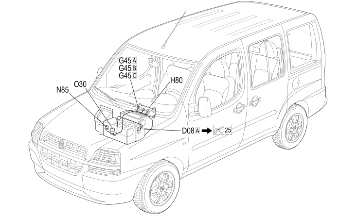

67 HEATER
- Path
- Electrical equipment > 2 WIRING > 67 HEATER
- Kind
- wiring harness
- Applies to
- engines: 1.2 8v, 1.6 16v, 1.9 JTD 8V, 1.9 DIESEL; all production periods
- Interactive page
- https://sloeber94.github.io/elrnDB-fDbl/en/#/223004122
Applies to: engines: 1.2 8v, 1.6 16v, 1.9 JTD 8V, 1.9 DIESEL; all production periods

Topics that link to this page (12)
- D008A FRONT/AIR CONDITIONING - HEATER COUPLING (HEATER)
- D8A FRONT/AIR CONDITIONING - HEATER COUPLING ( HEATER )
- G045A AIR CONDITIONING/HEATER CONTROLS LIGHT (HEATER)
- G045B AIR CONDITIONING/HEATER CONTROLS LIGHT (HEATER)
- G045C AIR CONDITIONING/HEATER CONTROLS LIGHT (HEATER)
- G45A AIR CONDITIONING/HEATER CONTROLS LIGHT ( HEATER )
- G45B AIR CONDITIONING/HEATER CONTROLS LIGHT ( HEATER )
- G45C AIR CONDITIONING/HEATER CONTROLS LIGHT ( HEATER )
- H081 CLIMATE CONTROL FAN CONTROL (HEATER)
- H81 CLIMATE CONTROL FAN CONTROL ( HEATER )
- N85 PASSENGER COMPARTMENT VENTILATION FAN ( HEATER )
- O30 PASSENGER COMPARTMENT AIR FAN ADJUSTMENT RESISTOR ( HEATER )